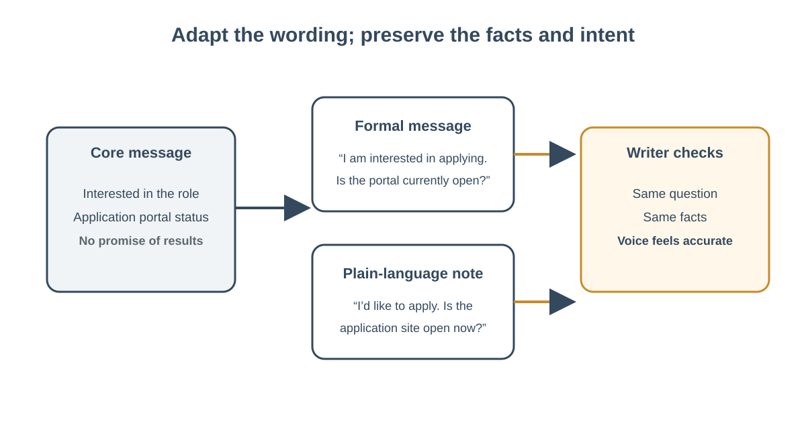

← Week 3: Iterate, Collaborate, and Communicate
Keep the Message Yours: Voice, Claims, and Transparency
Learning objectives: Check claims and transformations against appropriate evidence, detect uncertainty or bias, and decide whether to accept, revise, verify further, or reject an output.; Explain when AI is useful, when another method is preferable, and how to communicate the role and limits of AI-assisted work.; Preserve accurate meaning, audience fit, and the writer’s intended voice.; Make an appropriate decision about communicating AI assistance.
Content
Keep the message yours: voice, claims, and transparency
Writing support can save time, but a smooth sentence may change what you mean. It can make you sound more certain, more experienced, more formal, or more enthusiastic than you are. In workplace settings, a message can affect trust and opportunity. A person who uses AI remains accountable for the claims, tone, and commitments in the final version.
This reading explains how to preserve a human voice while using generated suggestions and how to decide when AI assistance should be disclosed. Voice is not a fixed “personal style” that must never change. It is the set of choices that make a message accurate, appropriate for its audience, and consistent with what the writer intends to say.

Figure: Adapt tone for the audience while preserving facts and intent.
Protect the substance first
Start with the purpose of the message. What should the reader know or do? Then list the facts, opinions, and commitments you are prepared to stand behind. These are boundaries for drafting. They may include: “I attended the meeting,” “I am interested in the position,” or “I have not yet submitted an application.” The AI tool may reorganize these statements, but it should not upgrade them into stronger claims.
Consider Jordan, a fictional early-career applicant. Jordan wants to thank a hiring coordinator for explaining an entry-level support role and ask whether the application portal is still open. The coordinator mentioned that the team values clear notes and patient explanations. Jordan has not yet applied and has no documented case-management experience. A generated draft says: “I am an ideal fit, have extensive experience, and already submitted my application.” Those sentences are not harmless embellishments. They assert qualifications and actions Jordan did not provide.
A person reviewing a draft can mark each sentence as one of three types:
- Known fact: supported by the notes or another reliable source.
- Personal judgment: a view or preference the writer can confirm as their own.
- Claim or commitment: a statement another person may rely on, such as experience, a result, or a promise.
For every claim or commitment, ask whether it is accurate and whether you are willing to stand behind it. Delete or revise anything unsupported. If the fact matters and could be verified, check it with an appropriate source before sending.
Treat voice as an audience choice
A message’s voice should fit the purpose and relationship. A team update may be direct; a condolence message may require care; a public instruction should use plain language and avoid ambiguity. “Make it sound like me” is difficult for a tool to interpret unless you explain what that means. More useful directions are observable: “Use short sentences, a friendly but not casual tone, and no exaggerated claims.”
You can preserve voice through a short process:
- Write the central point in your own words before requesting help.
- Tell the tool the audience, purpose, and tone qualities you want.
- Set boundaries on facts, claims, and commitments.
- Review the draft sentence by sentence.
- Read it aloud or imagine a follow-up question from the reader.
- Make the final edits yourself.
You may provide a brief sample of your own writing if appropriate, but use judgment. Do not paste private correspondence, client details, or someone else’s personal information without permission. A description of style qualities is usually enough. The goal is not to imitate a person perfectly; it is to communicate the writer’s intended message clearly.
Decide when to disclose assistance
There is no single disclosure sentence that fits every use. Requirements may come from workplace policy, a course, a contract, or audience expectations. Always follow the applicable rule. When no rule is clear, ask whether the assistance materially shaped the substance, reasoning, or claims; whether the audience would reasonably expect to know; and whether you can describe the tool’s contribution accurately.
A simple decision check has four questions:
- What rule applies? Check the relevant instructions or policy. If disclosure is required, provide it in the requested form.
- How much did the tool shape? A spelling suggestion differs from a tool-generated analysis or a full draft containing substantive claims.
- What does the audience need to know? The answer may depend on whether the reader is evaluating authorship, expertise, evidence, or accountability.
- What can you say truthfully about review? Describe what the tool did and what you checked. Do not imply that every claim was independently verified if it was not.
For example, a person may use a tool to shorten a routine note and personally verify its details. If no rule or audience expectation calls for disclosure, a special announcement might not add useful information. If a tool drafted a portfolio statement that affects an employer’s view of the applicant, the writer should scrutinize the claims and follow the applicable expectations. If AI materially contributed to a report’s analysis, readers may need a clear account of that role to understand how the work was produced.
Disclosure is not a repair for inaccurate content. “AI helped write this” does not make an unsupported statement acceptable. Correct or remove the claim. Likewise, human review should not be used to pretend that AI played no role when it substantially shaped the work. Transparency should be specific and proportionate. A useful statement, when relevant, might say: “I used an AI tool to organize my draft, then checked the dates against the approved schedule and edited the wording.”
Keep authorship visible in practice
A decision log can help: “Accepted: the subject line is clear. Changed: removed a claim about experience. Checked: the role title against the posting. Omitted: a promise I cannot make.” This record is useful even when no disclosure is needed because it makes the human review concrete.
When you prepare work for another person, distinguish between the help you received and the responsibility you retain. You might use AI to brainstorm, outline, shorten, or rephrase. You still need to know what the final text says. If you cannot explain a claim, defend a recommendation, or answer a reasonable question about the work, pause and revise.
Practice with a fictional message
Draft a short thank-you note using fictional details. Underline every statement about experience, action, or result. Circle language that does not sound natural to you. Replace inflated claims with accurate wording. Then apply the four disclosure questions. Write one sentence explaining whether disclosure is required or useful in the scenario and why. If no tool is available, ask a partner to suggest edits and follow the same steps.
The aim is not to make every message sound identical or to disclose in the same way every time. It is to keep the writer’s purpose, evidence, and accountability connected to the final message. Use assistance freely where appropriate, but make sure you can recognize and own what you send.